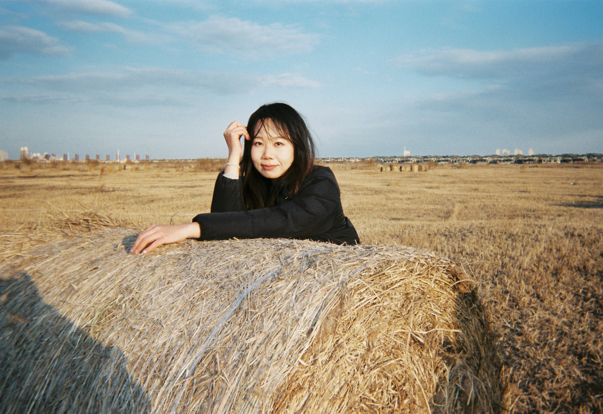
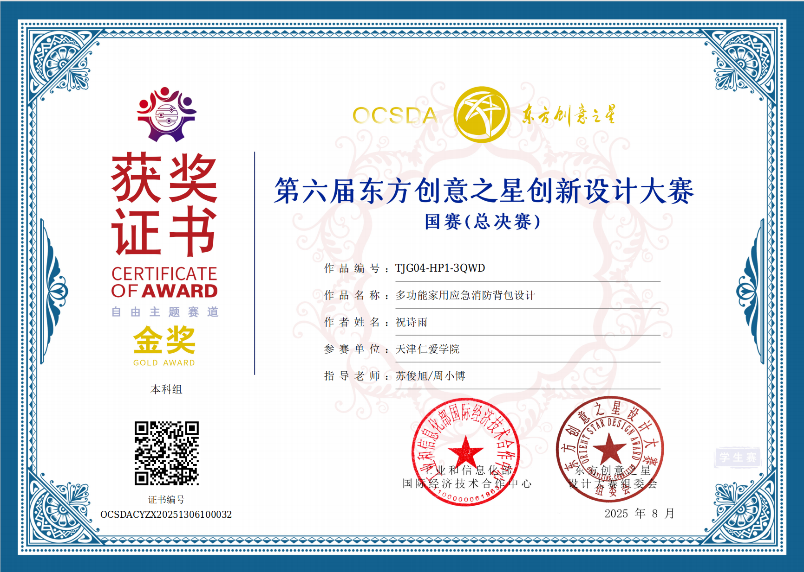
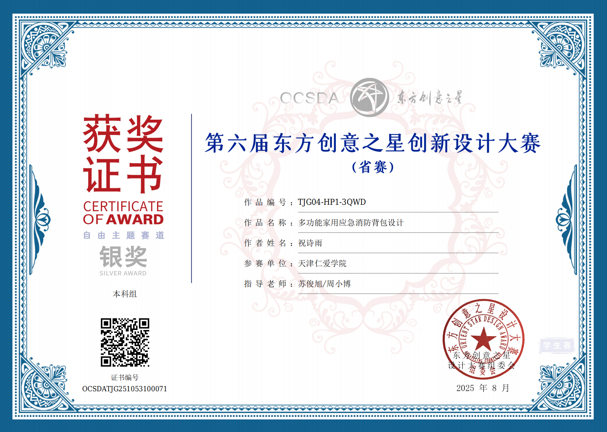
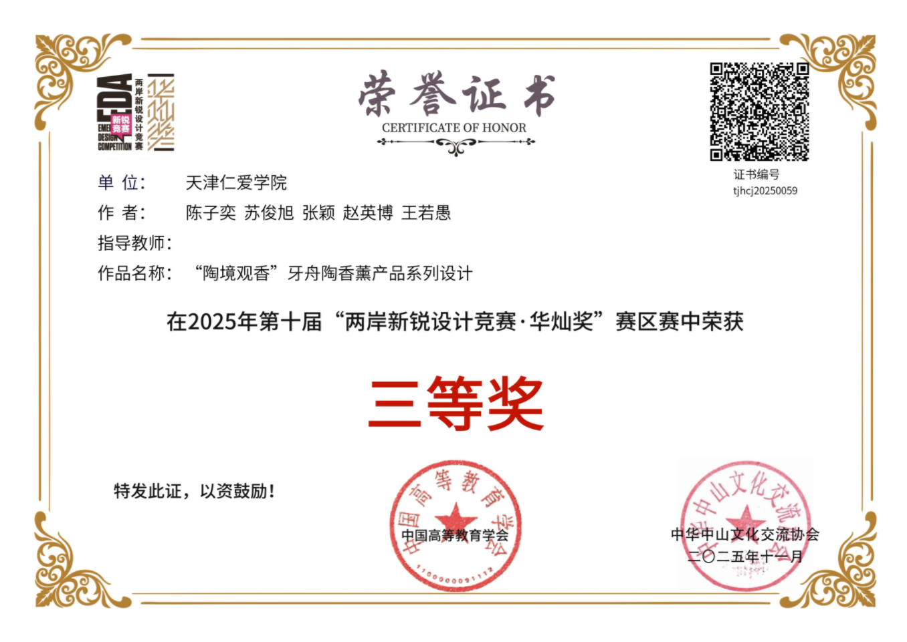
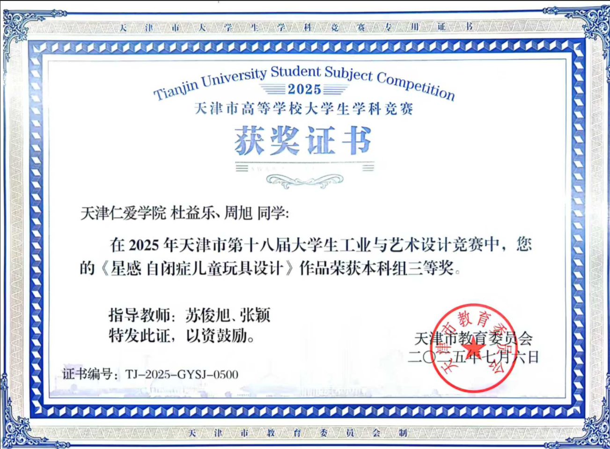
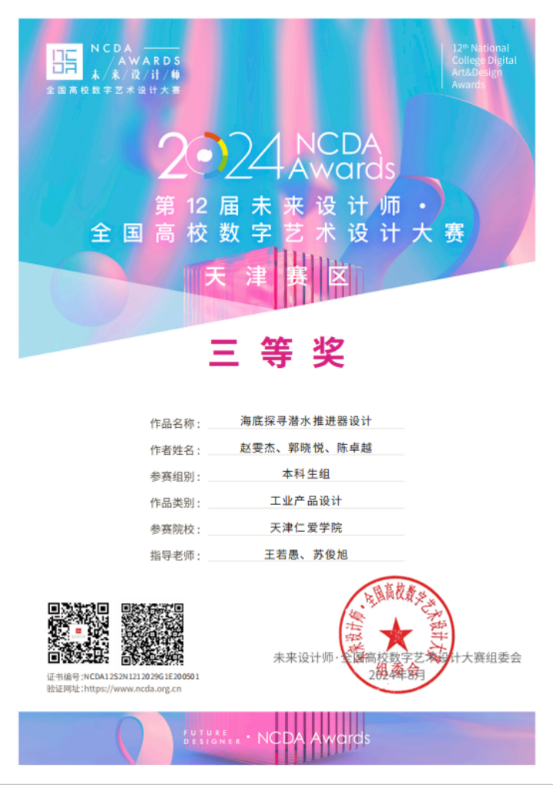
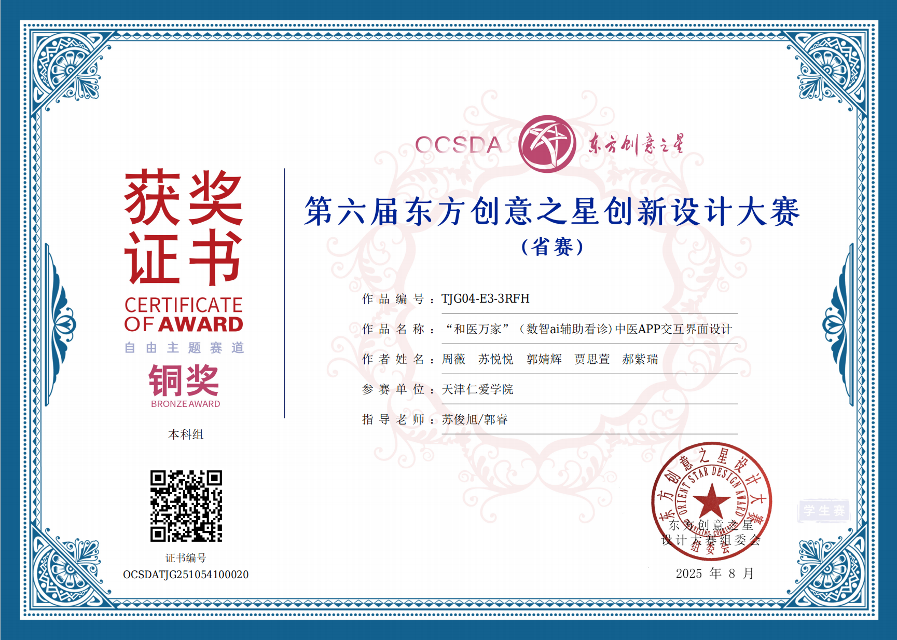
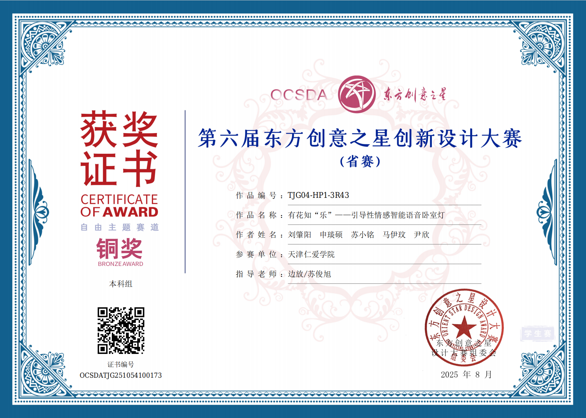
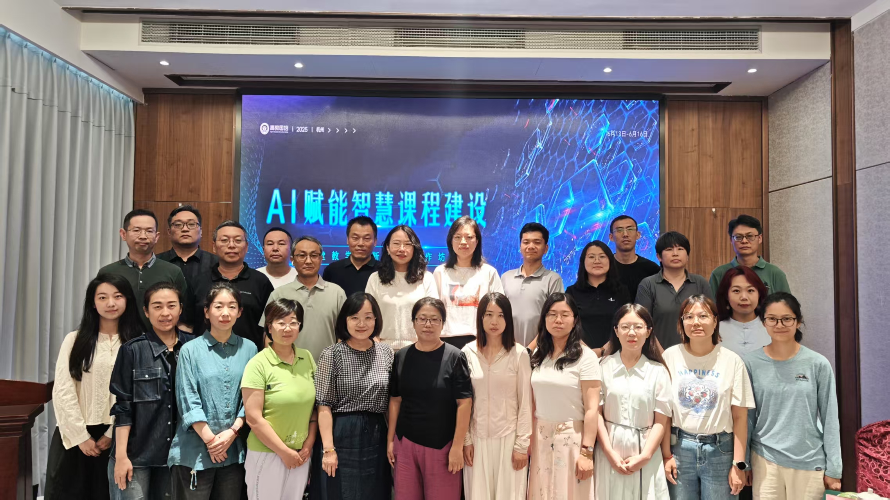

以设计之美，
启创新思维之光
河北工业大学助教，产品创新设计方向硕士。在课堂与研究中探索用户体验、产品服务设计与社会创新设计的交汇地带，相信设计教育的根本是点燃学生用设计的眼光看世界、用创新的思维解难题的能力。

设计是一种
解决问题的思维方式
好的设计不只关乎美学，更关乎人——人与物的对话、人与环境的共生，以及设计背后那份对人的关怀与对问题的清醒追问。
毕业于河北工业大学艺术设计专业，师从产品创新设计方向。在研究生阶段，系统地探索了用户体验设计、产品服务系统设计以及社会创新设计的理论与实践，逐渐形成了"以用户为中心、以问题为导向"的设计思维。
作为一名青年教师，深知教育的本质是点燃而非灌输。在课堂上，注重引导学生从观察生活出发，培养他们发现问题、定义问题、解决问题的完整设计能力。鼓励学生在技术与人文之间寻找平衡，在创新与责任之间建立连接。
科研方面，持续关注智能产品设计、绿色可持续设计等前沿领域，积极参与教育教学改革项目，努力将最新的设计理念和方法融入教学实践中。
多维度探索
设计的边界与可能
用户体验
以用户为中心的设计方法，关注产品与服务的可用性、易用性与情感体验，通过用户研究构建真正满足需求的解决方案。
产品服务设计
从系统视角整合产品与服务，设计完整的用户旅程与接触点，打造有形产品与无形服务相融合的整体体验。
社会创新设计
用设计思维回应社会议题，关注弱势群体与公共利益，探索设计在社会创新中的角色与价值，推动积极的社会变革。
智能产品设计
探索人工智能、物联网等新技术语境下的产品设计范式，研究人机交互的新模式与新伦理，塑造面向未来的智能产品体验。
绿色可持续设计
关注环境与社会的可持续发展，从材料选择、生命周期评估到循环经济模式，研究如何通过设计减少对环境的负面影响。
在课堂上
传递设计的温度
交互设计原理与方法
系统介绍交互设计的核心理论、方法与工具，从用户研究到原型设计，帮助学生建立完整的交互设计思维框架与实践能力。
工业设计史
梳理工业革命以来设计发展的脉络，从工艺美术运动到当代设计思潮，帮助学生理解设计演变背后的社会、技术与文化动因。
现代设计史
聚焦20世纪以来的现代设计运动，深入探讨现代主义、后现代主义等重要设计流派的理论与实践，培养学生的设计审美与批判思维。
在探索中
不断成长与收获
获奖与荣誉
论文与项目
获奖证书展示

金奖 · 国赛 01多功能家用应急消防背包设计
面向家庭应急场景的消防背包设计，融合功能性与便携性。获第六届东方创意之星国赛总决赛金奖。

银奖 · 省赛 02多功能家用应急消防背包设计
同作品在省赛中获银奖，体现了设计方案的完成度与实用性，受到评委一致认可。

三等奖 · 国赛 03「陶境观香」牙舟陶香薰产品系列设计
以非遗牙舟陶为载体的香薰产品系列设计，探索传统工艺与现代生活方式的融合路径。

三等奖 · 市赛 04「星感」自闭症儿童玩具设计
面向自闭症儿童的感官引导玩具设计，通过触觉与视觉反馈建立情感连接，体现设计的人文关怀。

三等奖 · 省赛 05海底探寻潜水推进器设计
水下探测装备的工业产品设计，聚焦人机工程与水下环境的适配，探索潜水推进器的形态创新。
立式导线扫描器设计
面向生产线质检场景的立式导线扫描设备设计，注重操作效率与人体工学优化。

铜奖 · 省赛 07「和医万家」中医APP交互界面设计
数智AI辅助看诊中医APP的交互界面设计，将传统中医问诊流程数字化，提升用户就医体验。

铜奖 · 省赛 08「有花知乐」情感智能语音卧室灯
引导性情感智能语音卧室灯设计，通过灯光氛围与语音交互引导情绪，探索智能产品的情感化设计。
研修与学术交流

天津大学「新文科」建设研修班
参加天津大学 — 仁爱学院「新文科」建设理念与实践研修班，在天津大学130周年校庆之际，深入探讨新文科建设的路径与方法。

AI 赋能智慧课程建设工作坊
参加超星集团于杭州举办的「AI 赋能智慧课程建设」教学工作坊（6月13—16日），探索人工智能技术在课程建设与教学创新中的落地路径。
教育不是注满一桶水，而是点燃一把火。设计教育的意义，在于让学生学会用设计的眼光看世界，用创新的思维解难题。
— 苏俊旭